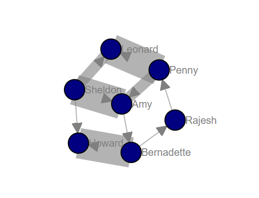

Core Functionalities
In order to create, manipulate, and study the structure, dynamics, and functions of complex networks, it is usefull to understand the various functions of d3graph. Here I will describe the core functionalities that can help to customize your network. In the following examples I will be using the karate network.
Import
Importing the d3graph library is the first step after the pip installation.
# Import library
from d3graph import d3graph
Initalization
The initialization is directly performed after importing the d3graph library. During the initialization, the following parameters can be set:
* collision : 0.5 : Response of the network. Higher means that more collisions are prevented.
* charge : 250 : Edge length of the network. Towards zero becomes a dense network.
* slider : [None, None] : Slider to break the network. The default is based on the edge weights.
* verbose : 20 : Print progress to screen, 60: None, 40: Error, 30: Warn, 20: Info, 10: Debug
A run with default initialization.
# Import library
from d3graph import d3graph
# Initialization with default parameters
d3 = d3graph()
# Load karate example
adjmat, df = d3.import_example('karate')
# Process the adjacency matrix
d3.graph(adjmat)
# Plot
d3.show()
The collision parameter
This network will go wild because it tries to prevent collisions from happening. At some point, the network will stop trying. You can reset it by breaking the network with the silder.
# Import library
from d3graph import d3graph
# Initialization to make the network be more nervous when nodes are close together.
d3 = d3graph(collision=3)
# Load karate example
adjmat, df = d3.import_example('karate')
# Process the adjacency matrix
d3.graph(adjmat)
# Plot
d3.show()
The charge parameter.
This network is much wider than the previous ones. This is certainly helpfull if you have a dense network and need to expand it for visualization purposes.
# Import library
from d3graph import d3graph
# Initialization to make network edges reltively longer.
d3 = d3graph(charge=1000)
# Load karate example
adjmat, df = d3.import_example('karate')
# Process the adjacency matrix
d3.graph(adjmat)
# Plot
d3.show()
Processing
The graph function d3graph.d3graph.d3graph.graph() processes the adjacency matrix to create a network with default node properties and edge properties. The nodes are the column and index names, and a connect edge for vertices with value larger than 0. The strenght of edges are based on the vertices values. The input for d3graph is the adjacency matrix.
Show
The show function d3graph.d3graph.d3graph.show() has several tasks.
Creating networkx graph G based on the node properties and edge properties.
Embedding of the data.
Writes the final HTML file to disk.
Opens the webbroswer with the network graph.
Node properties
There are various possabilities to customize the network using the node properties function d3graph.d3graph.d3graph.set_node_properties(). Intially, all default node properties are created which can than be customized. The underneath properties can be changed for each node. I will use the karate network to demonstrate the working.
Note
Node label
Node tooltip
Node color
Node size
Node edge color
Noe edge size
Node label
Lets change the node labels from the karate example into something more meaningfull.
# Import library
from d3graph import d3graph
# Initialization
d3 = d3graph()
# Load karate example
adjmat, df = d3.import_example('karate')
# Process the adjacency matrix
d3.graph(adjmat)
# Set node properties
d3.set_node_properties(label=df['label'].values)
# Plot
d3.show()
Tooltips
Getting more information when hovering over a node can be easily done using the tooltip parameter.
# Import library
from d3graph import d3graph
# Initialization
d3 = d3graph()
# Load karate example
adjmat, df = d3.import_example('karate')
# Process the adjacency matrix
d3.graph(adjmat)
# Set node properties
tooltip = '\nId: ' + adjmat.columns.astype(str) +'\nDegree: ' + df['degree'].astype(str) + '\nLabel: ' + df['label'].values
tooltip = tooltip.values
label = df['label'].values
# Set node properties
d3.set_node_properties(label=label, tooltip=tooltip, color=label)
d3.show()
# If you want thinner lines
d3.set_node_properties(label=label, tooltip=tooltip, color=label, minmax=[0.1, 25])
d3.show()
Node color
Lets change the node colors from the karate example using the label information. We do not need to re-initialize the whole graph but we can simply update the node properties.
# Set node properties
d3.set_node_properties(label=df['label'].values, color=df['label'].values)
# Plot
d3.show()
Node color on clustering
We can also change the node color on the clustering.
# Set node properties
d3.set_node_properties(label=df['label'].values, color='cluster')
# Plot
d3.show()
Node edge color on clustering
We can also change the node color on the clustering.
# Set node properties
d3.set_node_properties(label=df['label'].values, edge_color='cluster')
# Plot
d3.show()
Node size
Lets change the node size from the karate example using the degree of the network. We do not need to re-initialize the whole graph but we can simply update the node properties.
# Set node properties
d3.set_node_properties(label=df['label'].values, color=df['label'].values, size=df['degree'].values)
# Plot
d3.show()
Node edge size
Lets change the node edge size from the karate example using the degree of the network. We do not need to re-initialize the whole graph but we can simply update the node properties.
# Set node properties
d3.set_node_properties(label=df['label'].values, color=df['label'].values, size=df['degree'].values, edge_size=df['degree'].values)
# Plot
d3.show()
Node edge color
Lets change the node edge color from the karate example using a specified color. We do not need to re-initialize the whole graph but we can simply update the node properties.
# Set node properties
d3.set_node_properties(label=df['label'].values, color=df['label'].values, size=df['degree'].values, edge_size=df['degree'].values, edge_color='#FFF000')
# Plot
d3.show()
Customize the properties of one specific node
# Import library
from d3graph import d3graph
# Initialization
d3 = d3graph()
# Load karate example
adjmat, _ = d3.import_example('bigbang')
# Process the adjacency matrix
d3.graph(adjmat)
# Examine the node properties
print(d3.node_properties)
# {'Amy': {'label': 'Amy', 'color': '#000080', 'size': 10, 'edge_size': 0.1, 'edge_color': '#000000'},
# 'Bernadette': {'label': 'Bernadette', 'color': '#000080', 'size': 10, 'edge_size': 0.1, 'edge_color': '#000000'},
# 'Howard': {'label': 'Howard', 'color': '#000080', 'size': 10, 'edge_size': 0.1, 'edge_color': '#000000'},
# 'Leonard': {'label': 'Leonard', 'color': '#000080', 'size': 10, 'edge_size': 0.1, 'edge_color': '#000000'},
# 'Penny': {'label': 'Penny', 'color': '#000080', 'size': 10, 'edge_size': 0.1, 'edge_color': '#000000'},
# 'Rajesh': {'label': 'Rajesh', 'color': '#000080', 'size': 10, 'edge_size': 0.1, 'edge_color': '#000000'},
# 'Sheldon': {'label': 'Sheldon', 'color': '#000080', 'size': 10, 'edge_size': 0.1, 'edge_color': '#000000'}}
# Customize the properties of one specific node
d3.node_properties['Penny']['label']='Penny Hofstadter'
d3.node_properties['Penny']['color']='#ffc0cb' # Pink
d3.node_properties['Penny']['size']=20
d3.node_properties['Penny']['edge_size']=5
d3.node_properties['Penny']['edge_color']='#0000ff' # Blue
# Customize a specific edge property
d3.edge_properties['Penny', 'Leonard']['color']='#FF0000' # red
# Print
print(d3.node_properties['Penny'])
# {'label': 'Penny Hofstadter', 'color': '#ffc0cb', 'size': 20, 'edge_size': 5, 'edge_color': '#000000'}
# Plot
d3.show()
Edge properties
The edge properties can be customized using four options. After creating the d3.graph(), the edges are based on the strength of the vertices.
Edge network properties can also be changed for the edges:
Note
weight
edge_distance
edge_distance_minmax
color
directed
marker
Customize Edge Properties
# Import library
from d3graph import d3graph
# Initialization
d3 = d3graph()
# Load karate example
adjmat, _ = d3.import_example('bigbang')
# Process the adjacency matrix
d3.graph(adjmat)
# Examine the node properties
print(d3.edge_properties)
# ('Sheldon', 'Amy'): {'weight': 5.0, 'weight_scaled': 20.0, 'color': '#000000'},
# ('Sheldon', 'Howard'): {'weight': 2.0, 'weight_scaled': 1.0, 'color': '#000000'},
# ('Sheldon', 'Leonard'): {'weight': 3.0,'weight_scaled': 7.3333, 'color': '#000000'}}
# ...
# Set to directed edges
d3.set_edge_properties(directed=True)
# Customize the properties of one specific edge
d3.edge_properties[('Sheldon', 'Howard')]['weight']=10
d3.edge_properties[('Penny', 'Leonard')]['color']='#ff0000'
# Plot
d3.show()
|

Normalization
There are two manners to scale the edges; scaling using the minmax or scaling using the z-score. The default option is the z-score because the results tends to better in most use-cases. Let’s see the differences between the different methods.
# Import library
from d3graph import d3graph
# Initialization
d3 = d3graph()
# Load karate example
adjmat, _ = d3.import_example('bigbang')
# Process the adjacency matrix
d3.graph(adjmat)
# Set to no scaler (default)
d3.set_edge_properties(directed=True, minmax=[1, 20], scaler=None)
d3.show()
# Set to minmax scaler
d3.set_edge_properties(directed=True, minmax=[1, 20], scaler='minmax')
d3.show()
# Set to zscore scaler (default)
d3.set_edge_properties(directed=True, minmax=[1, 20], scaler='zscore')
d3.show()
|
 |

Markers
- The start and end of the edges can be set for the following markers:
arrow
circle
square
stub
None or ‘’
The default marker_end is set to arrow whereas the marker_start is set to None.
Each marker can be customized using the edge_properties.
# Import library
from d3graph import d3graph
# Initialization
d3 = d3graph()
# Load karate example
adjmat, _ = d3.import_example('bigbang')
# Process the adjacency matrix
d3.graph(adjmat)
# Set some node properties
d3.set_node_properties(color=adjmat.columns.values, size=[10, 20, 10, 10, 15, 10, 5])
# Edge properties
print(d3.edge_properties)
# {('Amy', 'Bernadette'): {'weight': 2.0, 'weight_scaled': 2.0, 'color': '#808080', 'marker_start': '', 'marker_end': 'arrow', ...
# Set all marker-end to square and keep marker_start to be None or ''
d3.set_edge_properties(directed=True, marker_end='square', marker_start='')
d3.show()
# Make some customized changes in the marker-end by removing all markers and set one for penny-leonard.
d3.set_edge_properties(directed=True, marker_end='')
# Set markers for individual edges
d3.edge_properties['Penny', 'Leonard']['marker_end']='arrow'
d3.edge_properties['Sheldon', 'Howard']['marker_end']='stub'
d3.edge_properties['Sheldon', 'Leonard']['marker_end']='circle'
d3.edge_properties['Rajesh', 'Penny']['marker_end']='square'
d3.show()
|
|


{kind=link}
Various
# Set edge properties with a edge distance
d3.set_edge_properties(edge_distance=100)
# Plot
d3.show()